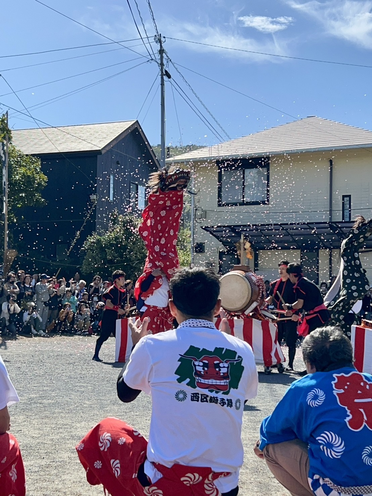
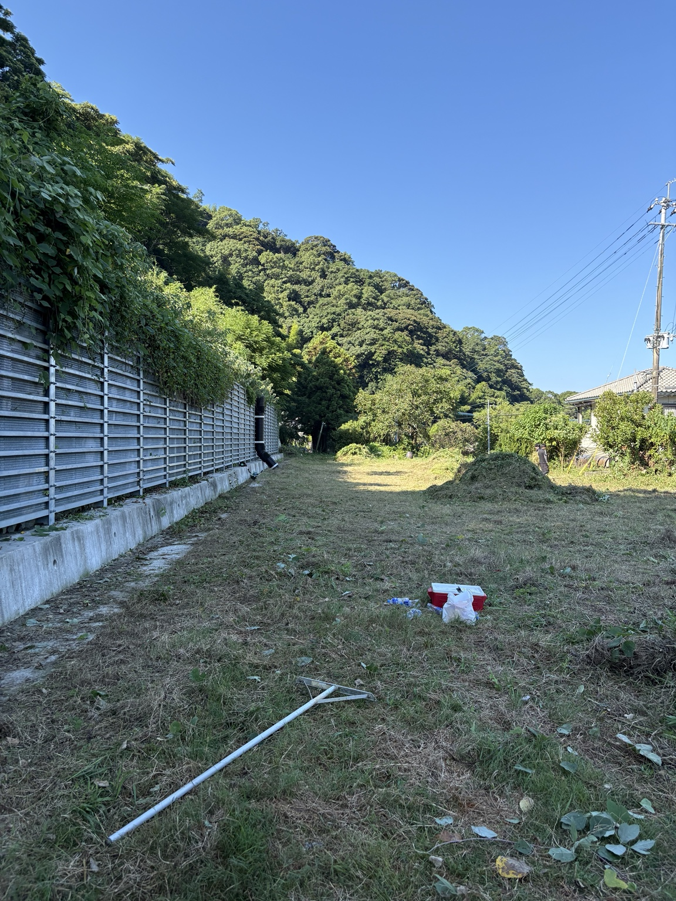
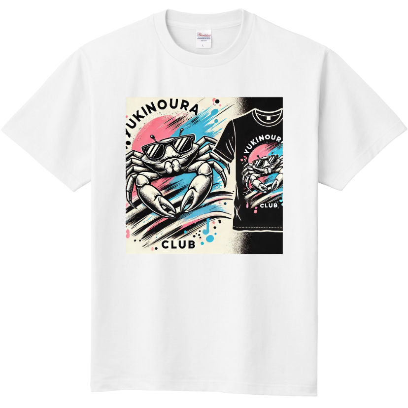
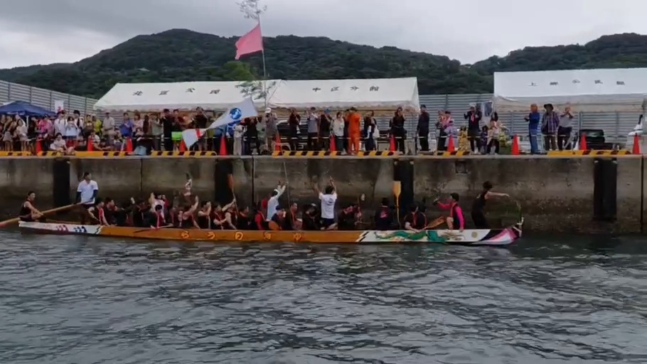

伝統をつなぐ
雪浦くんちをはじめ、地域に受け継がれてきた文化を次の世代へ。
長崎県西海市・雪浦。地域の文化と記憶を受け継ぎながら、次の一歩をつくります。
ゆきのうら倶楽部は、地域の行事、伝統文化、人のつながりを次の世代へつなぐために活動しています。
受け継ぐだけではなく、毎年ひとつでも新しい挑戦を。人が替わっても経験が残り、誰もが次の担い手になれる地域を目指します。


雪浦くんちをはじめ、地域に受け継がれてきた文化を次の世代へ。

竹灯籠や地域行事など、今の雪浦だからできる新しい楽しみを。
イベントだけでなく、草刈りや環境整備など、暮らしの足元から。

発信やグッズも地域活動の一部。従来の形にとらわれず、新しい表現に挑戦します。
いつ、何を考え、何を達成したのか。成果だけでなく、試行錯誤も次の担い手へ渡していく。50年後にも、この軌跡を語れるように。
ゆきのうら倶楽部 設立。地域の伝統文化と行事を未来へつなぐ活動が始まる。
地域行事への参加と支援を広げ、人と活動をつなぐ取り組みを積み重ねる。
平和の灯り、夏祭り、熊野神社、雪浦くんちなど、継承と新しい挑戦を両輪に活動。
50年先にも、この続きを語れるように。
前年踏襲をゴールにしない。去年の経験を次のスタート地点にして、小さくても新しい一歩を積み重ねます。
